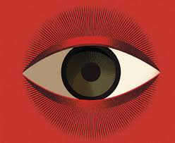

1984
Em "1984", George Orwell não nos oferece meramente uma história; ele nos apresenta um espelho distorcido, mas assustadoramente familiar, da tirania em sua forma mais absoluta. A trama se desenrola em uma Londres desolada, sob o jugo perpétuo do Partido e de seu líder onipresente, o Grande Irmão. A realidade é maleável, moldada e remoldada pelo Ministério da Verdade, onde Winston Smith, um burocrata desiludido, trabalha reescrevendo a história para alinhar-se à narrativa oficial. A Novilíngua, um idioma artificialmente empobrecido, serve como ferramenta para tolher o pensamento independente, enquanto a Duplipensar permite a aceitação de verdades contraditórias simultaneamente.
A vigilância é total, exercida pelas onipresentes Teletelas e pelos Olhos do Partido, transformando a privacidade em uma quimera. A liberdade é um conceito esquecido, e o amor, uma perversão. A rebelião, antes mesmo de se manifestar em atos, é esmagada em seus germes mais ínfimos, na própria mente. Winston, em sua desesperada busca por um resquício de individualidade, aventura-se em um romance proibido com Julia e nutre a esperança de se juntar à suposta Irmandade, um grupo clandestino de resistência. Contudo, a opressão é tão intrínseca ao sistema que até mesmo a rebelião é uma armadilha, um instrumento para identificar e aniquilar qualquer vestígio de dissenso. O destino de Winston é selado no infame Quarto 101, onde seus maiores medos são usados para quebrar seu espírito, resultando em sua completa capitulação e no aniquilamento de sua essência, culminando na trágica e irônica aceitação do amor pelo Grande Irmão.
Orwell, com sua prosa austera e desapaixonada, não apenas critica os regimes totalitários de sua época, mas nos adverte sobre os perigos da manipulação da verdade, da supressão do pensamento crítico e da aniquilação da individualidade. "1984" é um lembrete sombrio de que a liberdade não é um direito inalienável, mas uma conquista frágil que deve ser constantemente defendida, pois a indiferença pode ser o prelúdio para a tirania mais absoluta. A obra permanece como um eco inquietante em nossos tempos, ressoando com a persistente relevância de suas sombrias profecias.
Principais Passagens e Referências
"Quem controla o passado, controla o futuro; quem controla o presente, controla o passado."
Essa frase, que ressoa como um mantra sinistro em todo o livro, me persegue. Ela não é apenas uma máxima do Partido, mas a essência de sua monstruosa capacidade de redefinir a própria realidade. Penso em Winston, reescrevendo artigos de jornal antigos, apagando pessoas da existência, alterando eventos para se encaixarem na narrativa do momento. É como se a verdade fosse um pedaço de argila nas mãos do poder, moldada e remoldada sem fim. Isso me faz refletir sobre como nossas próprias histórias, sejam elas pessoais ou coletivas, podem ser tão facilmente distorcidas, esquecidas ou reescritas, perdendo sua essência e nos deixando à deriva em um mar de incertezas."Guerra é Paz. Liberdade é Escravidão. Ignorância é Força."
As palavras de ordem do Partido, gravadas nas paredes do Ministério da Verdade, são um tapa na cara da lógica. Lembro-me de Winston lutando para internalizar essas contradições, a Duplipensar corroendo sua sanidade. É assustador pensar em como podemos ser condicionados a aceitar o inaceitável, a abraçar ideias que contradizem nossa própria razão. Quantas vezes, em nossa própria vida, somos levados a aceitar paradoxos em nome de uma suposta ordem ou conveniência? Orwell nos faz questionar a fragilidade de nossa própria percepção da realidade, e como ela pode ser moldada por forças externas.
"Você nunca podia ter certeza de que uma Teletela não estava observando você a qualquer momento."
A onipresença das Teletelas, esses olhos e ouvidos eletrônicos que invadem cada canto da vida de Winston, é de cortar o coração. Não há refúgio, não há intimidade. A privacidade se torna um luxo inimaginável, um conceito obsoleto. Sinto a angústia de viver sob um escrutínio constante, onde cada gesto, cada sussurro, pode ser um crime de pensamento. Essa sensação me leva a pensar sobre a vigilância em nosso próprio mundo, sobre a facilidade com que entregamos nossa privacidade em troca de conveniência, e como isso pode nos tornar vulneráveis a formas mais sutis de controle.
"Há certas coisas que você não pode suportar. Você não pode suportar ser comido por ratos."
No infame Quarto 101, a tortura final de Winston não é física, mas psicológica. O'Brien, com uma frieza calculista, confronta Winston com seu maior medo, o terror absoluto de ser devorado por ratos. Essa cena me revira o estômago, mas também me faz ponderar sobre a crueldade de se conhecer os medos mais profundos de alguém e usá-los para quebrar sua essência. A capitulação de Winston, sua mente finalmente quebrada e reprogramada para "amar" o Grande Irmão, é a derrota mais dolorosa de todas. É a perda da individualidade, a aniquilação do eu. Isso me faz valorizar ainda mais a liberdade de pensamento, de sentir, de ser quem realmente somos, e me alerta sobre os perigos de permitir que qualquer força externa nos retire essa liberdade essencial.

Perguntas gerais e palavras-chave
Qual é o nome do protagonista de 1984?
Qual era a real natureza de O'Brian?
Qual o idioma idolatrado pelo Partido?
Como O'Brian mudou o ponto de vista de Smith sobre o Partido?